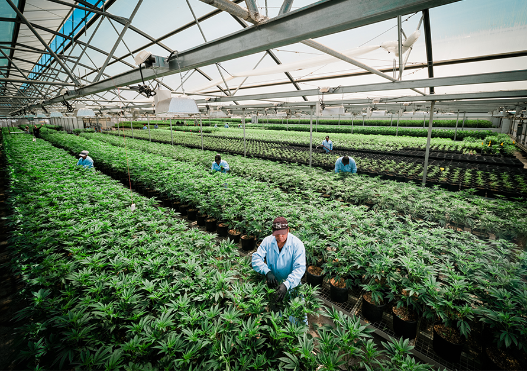
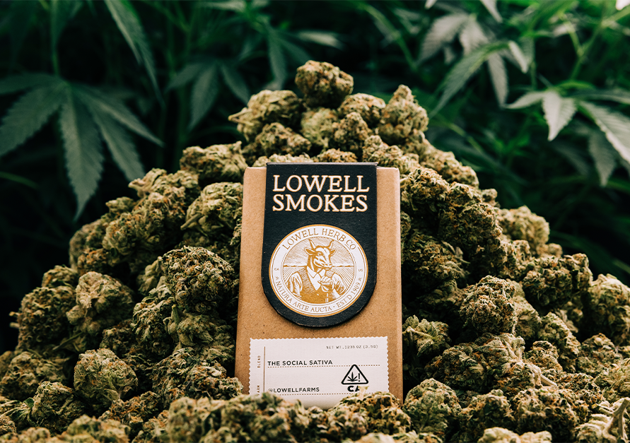

Great American Cannabis
Born at the dawn of legalization, Lowell has become America's favorite preroll with a footprint that spans across the United States of America. The reason for our success is simple:
What Sets Us Apart
At Lowell, every product is crafted with respect for the plant, our planet and you. We sweat the details so you don't need to.
Quality First
We start with really good artisan craft cannabis. We source from hundreds of growers and only take in product that meets rigorous criteria.
Always Blended
We purposefully blend our flour strains in order to add terpine diversity and flavor.
A Better Smoke
Every aspect of our prerolls are relentlessly engineered to give a smoother smoke with an easy draw. With Lowell, you will never lose a cherry again!
Ready and Able
Cannabis is gift that enhances our journey through this world. Our packaging is always travel friendly; complete with matches.

About
At Lowell [low·uhl], every product is crafted with respect for the plant, our planet and you. We proudly stand behind using sustainable packaging and practices to produce high quality, all natural cannabis products. We invite you to spark adventure and blaze new trails with our line of premium, California-inspired cannabis products. Whether you’re looking to get inspired, socialize, or unplug and connect with the world around you, let Lowell take you there.

Our Inspiration
In the spring of 1909, William "Bull" Lowell began growing what was called Indian Hemp on his farm on the central coast of California. Henry J. Finger took a dislike to Bull's "marijuana being smoked by the wrong kinds of people." Finger conspired to outlaw cannabis and later passed the 1913 Poison Act. Bull believed in a man's right to smoke the dried plant and enjoy its benefits. When the stubborn Bull refused to stop growing his beloved plant, Finger shut down Bull's farm and later threw him in jail.
History
Lowell was born in 2017 in Southern California at the dawn of legalization when we introduced the first pack of prerolls to the cannabis consumer. Today, we are proud to still be California’s #1 flower preroll pack. In 2021, Lowell began its expansion from California into other markets, following legalization around the country. Today, Lowell is based in the Hudson Valley Region of New York with operations spanning across the country.
Natura Arte Aucta
A loosely translated Latin phrase to mean "Nature enhanced through art." For us, it is an invitation to bring cannabis along with you as we seek to explore the world and its wonder. Cannabis can elevate the glory of life and enhance our appreciation of beauty. Legalization means many things, but at Lowell we believe legalization unlocks our ability to enjoy the world at large through the enhanced appreciation, love, focus and clarity that a good joint that can bring. As we all journey through the world, Lowell is a trusted companion in your pocket always ready to elevate the glory of life.
America’s Favorite Pre-Roll
Our success is the result of our painstaking attention to detail. Every Lowell product is made from choice, all natural ingredients selected by our discerning staff. At Lowell, we never stand still, we are always evolving the blends that we use and the engineered construction of our prerolls to bring an elevated experience. Our manufacturing processes and the materials we use are designed to yield the best smoking experience in the business.